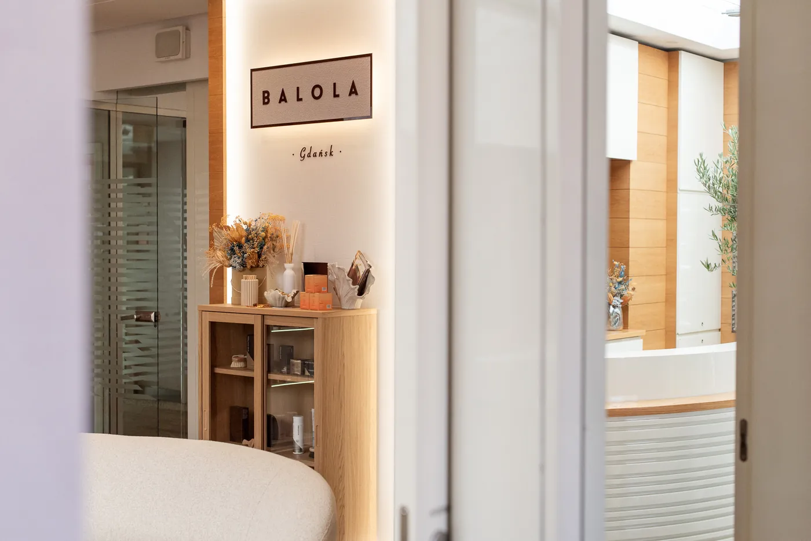
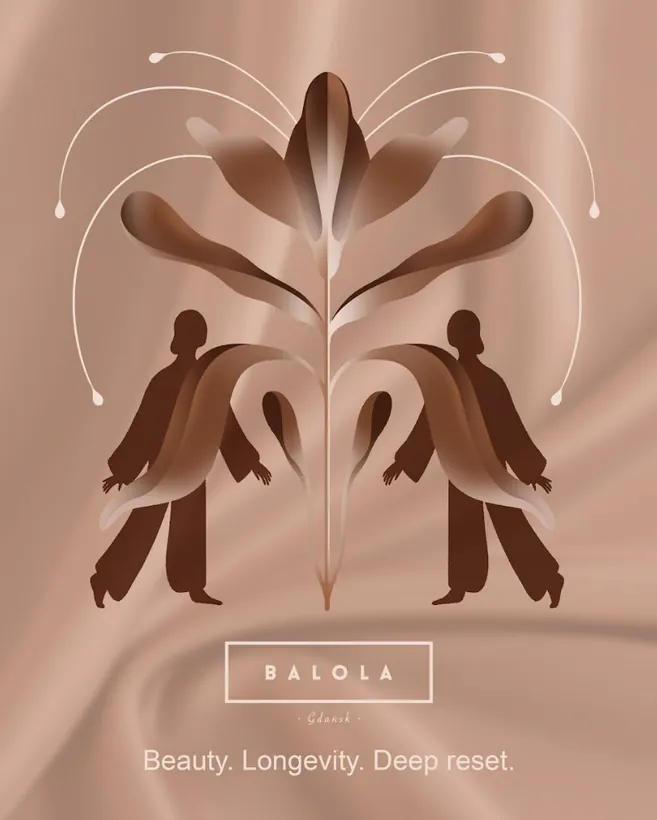
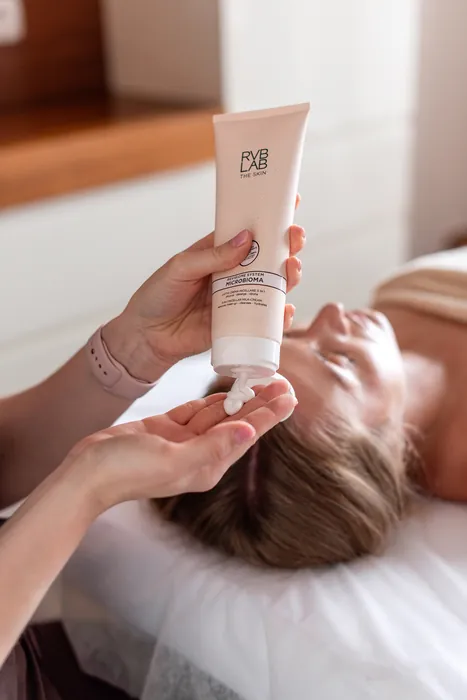

O nas
Balola to 12 lat doświadczenia, które zaczęło się w Sopocie. Gdańsk jest kolejnym rozdziałem tej historii, z własnym charakterem, ofertą i widokiem na Motławę.
Od Sopotu do Gdańska
Balola powstała w Sopocie, przy ul. Kościuszki, z myślą o kobietach aktywnych, wymagających i świadomych - takich, które oczekują realnego efektu i chcą, żeby czas w gabinecie był przyjemny.
Po 12 latach otwieramy kolejny rozdział w Hotelu Gdańsk Boutique. Ta sama dbałość o skuteczność, a do tego więcej przestrzeni na odpoczynek, rytuały i regenerację - na piątym piętrze, z widokiem na Motławę.


Longevity w Balola, po prostu
Nowoczesna pielęgnacja, regeneracja i wellbeing w estetyce współczesnego longevity. Tak opisujemy nasze podejście: świadome dbanie o siebie, regenerację, dobre samopoczucie i jakość życia na dłużej.
Co oznacza longevity?
Dosłownie długowieczność. W pielęgnacji to dbanie o skórę i ciało tak, żeby dobrze wyglądały i dobrze się czuły nie tylko dziś, ale także za kilka lat.
Jak to wygląda w praktyce?
Łączymy relaks i pracę dłoni z kosmetologią i nowoczesnymi technologiami. Zamiast jednorazowego efektu proponujemy plan: zabiegi dobrane do potrzeb skóry, regenerację i pielęgnację domową, którą da się utrzymać.
Czy to dla mnie, jeśli pierwszy raz słyszę o longevity?
Tak. Zacznij od bezpłatnej, 30-minutowej konsultacji. Opowiesz, czego potrzebujesz, a my podpowiemy, od czego zacząć.
A Strefa Longevity w cenniku?
To krótkie, 30-minutowe rytuały: oddychanie tlenowe i wodorowe, światło LED, opaska Webera i presoterapia. Ale longevity to podejście do każdej wizyty, nie tylko jedna kategoria.
Specjaliści
Salon prowadzi Marta Socha-Kilanowska. W Gdańsku pracuje zespół kosmetologów i terapeutów manualnych, który łączy zabiegi z technologią z pracą dłoni: masażem, refleksologią i rytuałami.
Każdą wizytę zaczynamy od rozmowy. Dobieramy zabieg do tego, czego potrzebuje skóra i jak chcesz się czuć po wyjściu, a po zabiegu podpowiadamy, jak przedłużyć efekt w domu.
Miejsce na sylwetki specjalistów (zdjęcie w ciepłej tonacji, imię, specjalizacja, 2-3 zdania).

Opinie z Booksy
„Zabieg bardzo relaksujący i odżywczy. Pan Hubert dokładnie omawiał każdy etap zabiegu, dzięki czemu czułam się zaopiekowana i w pełni komfortowo. Profesjonalne podejście, miła atmosfera i chwila prawdziwego relaksu. Zdecydowanie polecam!”
„Bardzo przyjemny masaż, piękne glow na twarzy, super atmosfera, profesjonalnie i przytulnie. Polecam serdecznie”
„Świetnie wykonany zabieg, Pani Katarzyna sprawiła, że atmosfera podczas zabiegu była przyjemna i czułem się zaopiekowany choć trochę mnie stresował zabieg laserowy. Polecam serdecznie”
„Laminacja + masaż głowy ekstra!!! Polecam wszystkim”
„super zabieg, bardzo miła obsługa”
„Wspaniały masaż”